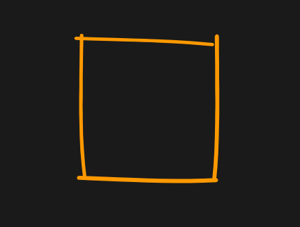

雑な線
実行例
 実行結果を見る
解説/アルゴリズム
import * as p5 from "p5";
new p5((p: p5) => {
function line(x1: number, y1: number, x2: number, y2: number): void {
// 始点(x1, y1)と終点(x2, y2)をもとの位置から半径r以内のランダムな場所に移動
// (x1, y1)が(tx1, ty1)に, (x2, y2)が(tx4, ty4)になる。
const rad0 = p.random(p.TWO_PI);
const rad1 = p.random(p.TWO_PI);
const r = 10;
const r0 = p.random(r);
const r1 = p.random(r);
const tx1 = x1 + Math.cos(rad0) * r0;
const ty1 = y1 + Math.sin(rad0) * r0;
const tx4 = x2 + Math.cos(rad1) * r1;
const ty4 = y2 + Math.sin(rad1) * r1;
// 始点から終点への角度を少しずらした角度を計算し、
// その角度の方向に線を伸ばした50%/75%の位置を3次ベジェ曲線の制御点にする。
const dx = tx4 - tx1;
const dy = ty4 - ty1;
const d = p.dist(tx1, ty1, tx4, ty4);
const rad2 = p.atan2(dy, dx) + p.random(-0.05, 0.05);
const tx2 = p.lerp(tx1, tx1 + Math.cos(rad2) * d, 0.5);
const ty2 = p.lerp(ty1, ty1 + Math.sin(rad2) * d, 0.5);
const tx3 = p.lerp(tx1, tx1 + Math.cos(rad2) * d, 0.75);
const ty3 = p.lerp(ty1, ty1 + Math.sin(rad2) * d, 0.75);
p.strokeWeight(p.random(4, 7));
p.bezier(tx1, ty1, tx2, ty2, tx3, ty3, tx4, ty4);
}
function rect(x: number, y: number, width: number, height: number): void {
line(x, y, x + width, y);
line(x, y, x, y + height);
line(x + width, y, x + width, y + height);
line(x, y + height, x + width, y + height);
}
p.setup = () => {
p.createCanvas(window.innerWidth, window.innerHeight).parent(
"canvas-container"
);
p.noFill();
p.stroke("#ff9900");
reset();
};
function reset(): void {
p.clear();
rect(200, 200, 200, 200);
}
p.mouseClicked = () => {
reset();
};
});